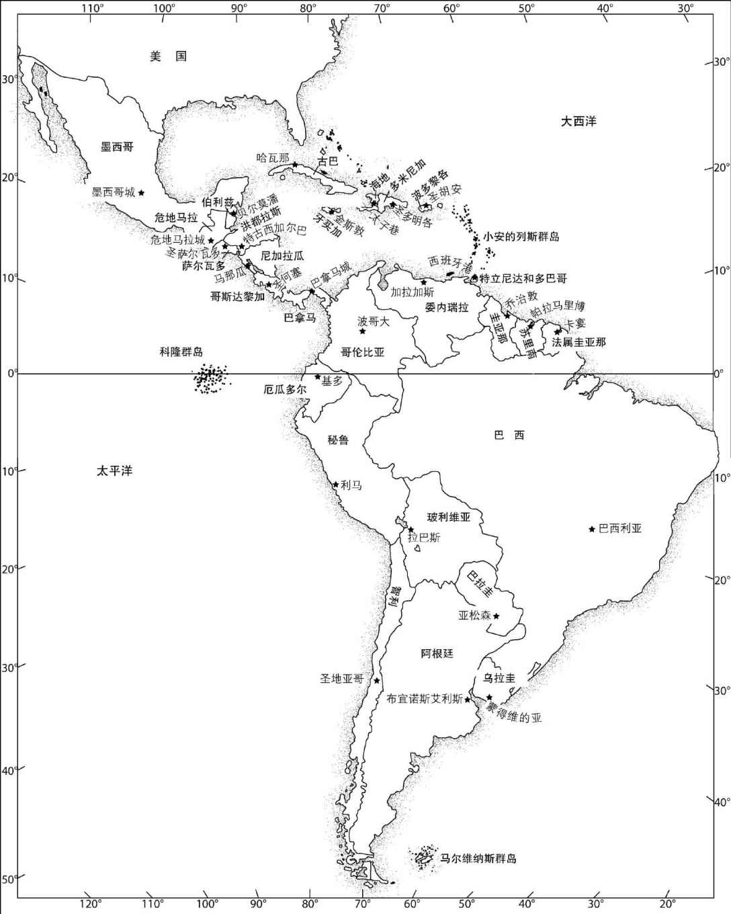

20世纪60年代，世界范围内掀起了一股前所未有的“拉丁美洲文学热”：豪尔赫·路易斯·博尔赫斯、加夫列尔·加西亚·马尔克斯、胡里奥·科塔萨尔、马里奥·巴尔加斯·略萨、卡洛斯·富恩特斯、巴勃罗·聂鲁达和奥克塔维奥·帕斯陆续进入西方受教育阶层读者的视野。米格尔·安赫尔·阿斯图里亚斯、聂鲁达、加西亚·马尔克斯、帕斯相继斩获诺贝尔文学奖；据说在当今中国，加西亚·马尔克斯已成为最受追捧的殿堂级作家。2010年，巴尔加斯·略萨也摘得诺贝尔文学奖桂冠。然而，在西班牙语世界以外，孕育这些伟大作家的叙事传统，却鲜有人真正了解。
尽管拉丁美洲的文学起源可以追溯到遥远的过去，拉丁美洲文学界却是直到19世纪50年代才首次萌生了“本土文学”的集体意识：一群来自拉丁美洲几个国家的流亡作家与外交官在巴黎集聚并共同创刊，以批判的视角重新审视殖民遗产，视其为新发现的文学传统的发端。这种对自我和对殖民者的重新认知，脱胎于拉丁美洲摆脱殖民统治的独立浪潮，逐渐孕育出众多声势浩大的文学新风潮和新实践并延续至今。

图1 当代拉丁美洲版图
最早的风潮之一，是拉丁美洲文学摆脱了政治骤变时期各国零散创作的局面，意识到自己已经形成了贯穿大陆的统一文学场域。这期间，各国纷纷寻求独立，百废待兴。美西战争 [2] 的到来不仅大为削弱了西班牙帝国的实力，也在英语美洲与西语美洲、宗主国西班牙与美洲殖民地之间划下了无法逾越的鸿沟。文化差异孕育出拉丁美洲的第一场文学运动——西语美洲现代主义运动。20世纪初，第一次世界大战的落幕、苏维埃和墨西哥革命的爆发，带动了“先锋派”文学的兴起，诗歌作品大量涌现，散文次之。第一次世界大战带来了深重的灾难：欧洲在19世纪建立起来的理想信念和远大抱负轰然崩塌，科学新发现的全盛时期如昙花一现，帝国主义肆意扩张的美梦也随之戛然而止。
西方国家陷入了困顿。一种主张打破常规的艺术形式——“先锋派”应运而生，其中包含了欧洲艺术。先锋派运动遍及欧洲，流派迭出，刺激了文学活动的繁荣。西班牙内战（1936—1939）期间，来自世界各地（包括拉丁美洲）的作家齐聚伊比利亚半岛，借笔声援西班牙共和国政权。西班牙本土作家与拉丁美洲作家（尤其是诗人）的融合，培育出广泛的政治和美学共识，碰撞并开辟出西班牙语诗歌的黄金时代。20世纪60年代，伴随着古巴革命而来的去殖民化趋势，催生了被称为“文学爆炸”的拉丁美洲小说的大繁荣。
就在世界格局骤变、拉丁美洲大陆的集体创作逐渐成形的同时，在各国政府的催发下，各国都有自己的国家文学，出现了一批有本土特色的知名作家。各国取得独立后普遍采用中央集权模式，作家和知识分子往往身兼国家公职，职务从显赫的外交官到普通的教师或政府官员。相较而言，大国文学更为繁荣，尤其是殖民时期总督府所在区域（墨西哥、秘鲁、拉普拉塔河流域）；哥伦比亚、智利和古巴亦拥有优渥的文学土壤（古巴文学的繁荣源于其特殊的地理位置：首都哈瓦那为一年两度西班牙舰队驶回本土的重要港口）。但是，国土面积或旧时的战略地位，绝非本土文学大家产生的唯一条件。1867年，鲁文·达里奥在小国尼加拉瓜出生，后成为继加尔西拉索·德·拉·维加（1501—1536）之后西班牙语诗界最具影响力的诗人。
由这群聚首巴黎的作家和知识分子引发的另一股风潮，是越来越多的拉丁美洲艺术家开始拥向法国首都，并随时将他们的文学与艺术思潮从那里推向世界。选择遥远的巴黎作为据点，与拉丁美洲天然的政治地理情况有关：广袤的土地上分布着19个大大小小的国家，缺乏一个具有号召力和辐射力的核心大都市——像纽约之于美国人，伦敦之于英国人那样。除却地理因素的限制外，在这些作家和知识分子的心目中，巴黎象征着挣脱出西班牙传统的自由，它拥有西班牙所不具备的、无与伦比的世界主义精神。因此，拉丁美洲的知识分子和艺术家纷纷被吸引至此，名作家中鲜有人不懂法语——这一传统甚至延续至今。
除了大陆一体意识、世界主义倾向外，拉丁美洲文学还形成了一种使自己区别于美国文学的独特创作风格。19和20世纪，拉丁美洲文学一直被笼罩在美国文学的阴影之下，但拉丁美洲文学最终走上了完全不同的道路。美国文学更倾向于表现城镇生活，而拉丁美洲文学常常通过作品来歌颂乡村图景和自然风光。在拉丁美洲文学作品中，自然界以丛林或广袤的平原的形象出现，是一种诱人的、险恶的力量，守护着个人和集体身份中的隐秘；鲜有拉丁美洲作家将其展现为田园诗般的风貌。
拉丁美洲作家在巴黎掀起的第三股风潮，是以文学刊物为核心阵地，推广他们一致认可的哲学和美学观点。可以说，现代拉丁美洲文学史，就是伴随这些刊物在美洲大陆的传播而发祥的。首本刊物的创刊地不在巴黎，而是由委内瑞拉作家安德烈斯·贝略在流亡伦敦时发行，名为《美洲文荟》（1826—1827）。但这本刊物的创办仅是一项个人的创举。紧接着，布宜诺斯艾利斯的《南方》、哈瓦那的《起源》、墨西哥城的《当代人》和波多黎各圣胡安的《探路人》等，纷纷创刊。时至今日，文学刊物仍有多种，墨西哥的《自由写作》便是一例。这些刊物多由作家个人发起，但其中也有官方支持的，如哈瓦那的《美洲人之家》便是由卡斯特罗共产主义政府出版的官方文学刊物，用于文化宣传。
另一股基于巴黎的19世纪拉丁美洲文坛的重要风潮，是作家们试图以殖民地文学为起点，展开一场追本溯源的“寻根运动”。怀抱着一种浪漫主义精神，他们试图从故土的文学创作中找到引领新叙事传统的本源，就像欧洲文学在“本土史诗”（《熙德之歌》、《罗兰之歌》、《尼伯龙人之歌》和《贝奥武夫》）中寻到的一样。考虑到殖民地文学创作于西班牙统治时期，作者多为西班牙人，“寻根”对于拉丁美洲而言确属不易。作家们想出的对策，是强调发现和征服美洲时所创作的纪事文学中，日后成为拉丁美洲的这片土地上发生的事迹，这些文字被赋予了史诗般的意义。他们同时指出，“印第安式”巴洛克风格（一股席卷17世纪新大陆的艺术风潮）的诗人和艺术家恰恰将自己美洲人的身份视作巴洛克风格的精髓。这些殖民时期的经历多次被写入小说，使读者对这一时期产生了强烈的兴趣。
同北美作家一样，这些拉丁美洲叙事传统的奠基人怀有展现这个新世界原始生命力的伟大抱负——时至今日，众多拉丁美洲作家依然将此视为写作的原点。在后来的发展中，对西方历史完全陌生的美洲作家身上继续体现出了这一点——无论是原住民还是非洲后裔，因为他们的祖先都不具有欧洲血统。这种对本土文化的孜孜以求，以各种方式一路延续至今，尽管事实上拉丁美洲文学写作所使用的语言来自西方，文学体例也是完全西式的。沃尔特·惠特曼的诗作既是个人心灵发展的史诗，也是美国民族发展的史诗，他所倡导的勇于探索新世界的精神，同样反映在拉丁美洲文学的作品（如聂鲁达的诗歌和马尔克斯的小说）中。对于拉丁美洲所面临的困境——一方面根植于欧洲体系，另一方面试图创立新传统——博尔赫斯给出的解决方案是将西方传统视为本源却并不奉为圭臬，通过自由的书写，在交锋与融合中进行重塑。这一讨论在拉丁美洲也成了一个永恒的话题，文人们不断就国家和拉丁美洲的身份认同等问题展开论述，不同国籍的作家往往能够给出不同的见解。
那么，拉丁美洲究竟是什么，又为何如此得名？我们得从殖民时期说起。西班牙帝国凭借侵略扩张的三件法宝（西班牙语、罗马天主教会和法律），赋予了新大陆和而不同的一体性。这三者与殖民时期的教育范式等诸多体系一起，共同构成了拉丁美洲文化的核心，使它与西方牢牢联结。（在一些特定的文学作品如《漫歌》和《百年孤独》中，作家呈现出对拉丁美洲的整体性思考，摆脱了对西班牙帝国或罗马帝国以来天主教普救论的留恋。）各国的独立运动并未粉碎这一整体性，这也正是为什么拉丁美洲纵然有19个不同的西班牙语国家，却始终有一条拉丁美洲的文化脉络和思想及艺术的持续交流联结着拉丁美洲各国及其与西班牙的关系。
至于拉丁美洲的得名，则来自19世纪中叶在墨西哥登陆的一群法国殖民探险者。此时的墨西哥已从西班牙殖民者手中获得独立，而这群法国冒险家正欲鲸吞这块沃土。他们想到，法语和西班牙语同属拉丁语系，试图借此建立起一个可以抵御英语美洲（即美国）的联盟。当然，“拉丁美洲”的叫法在当时并不合理，不仅因为拉丁美洲生活着的大量人群并非欧洲后裔，也因为拉丁语系的发端遥不可及，且并不具有政治含义。类比来说，英语属于日耳曼语系，但没有人会想要称美国人和加拿大人为“日耳曼美洲人”。尽管这一命名方式充满漏洞，“拉丁美洲”依然作为西班牙帝国曾经统治过的这块土地的名称而被沿用下来（当然，也有关于“西语美洲”、“伊比利亚美洲”甚至“印第安美洲”的分歧和争论）。无论如何，现代意义上的“拉丁美洲”大致从“拉丁”这个词被赋予这片土地的时刻开始形成。因此，我们沿用此称呼并非全错，但也应始终认识到，没有哪个名称是能够完整囊括和定义这片土地、土地上的各个国家或民族群体的实质的。
那么，巴西呢？巴西文学是除美国文学外，美洲大陆第二大繁荣的文学，它与美洲其他国家的文学之间保持着大量断断续续的交流。但巴西文学自成一家，用一种与西班牙语同语系、同语族却不相同的语言进行创作——尽管的确是拉丁美洲文学的一脉重要分支，却并不能被简单划归在西语美洲文学的门类之下。